Mapping Dada

Dada
Mapping Dada is an experiment in charting the cognitive proximity of Wikipedia articles as a means to better understand historic influence.
Two assumptions lie at the heart of the analysis: the first, that we can say two articles are related based on how many links are between them. For example, in the diagram below, we would say that because Parsons and NYC are directly linked, they are very related, and that Parsons and the Mayor are indirectly linked, so they are less related. The number of links gives us the metric for distance.
The second assumption is that we can measure the relative importance of an article based on how many links it shares with other articles in a network. This is not a new concept; Larry Page used it in his PageRank algorithm for the early days of Google.
A closed network of Articles (A-L) where ‘Article A’ is the most important since most articles link directly to it, and it links to no articles.
Combining these two metrics gives us an equation for measuring relevance between articles and get a better sense of how ideas move through space and time (at least as Wikipedia sees them). To put this model to test, it was run with the art movement Dada as the central node.
Using Wikipedia as the source data, all of the articles directly linked to Dada were gathered* and ranked. Since this was only the directly connected links, some preparation was made to collect the next level of links (distance = 2) but due to the sheer volume, only a 5% random sample of the second set has been collected for this initial release. However, this set of nearly 6000 articles still contains a few interesting insights and provides a good illustration of the capabilities of this sort of analysis.
An updated version will be launched in the near future with a more complete dataset.
You can read a detailed documentation and analysis of the model, assumptions and data collection here.
*Links that might break the analysis were excluded; in a nutshell, these were articles that list links or were so broad as to be more noise than signal. A full list of excluded articles can be seen in the appendix of the written analysis.
Created by Riley Hoonan for Parson's MS Data Visualization Program, 2017.
Code available under the MIT license on Github.
A visual exploration of the influence of the 20th century art movement, using Wikipedia’s link structure.